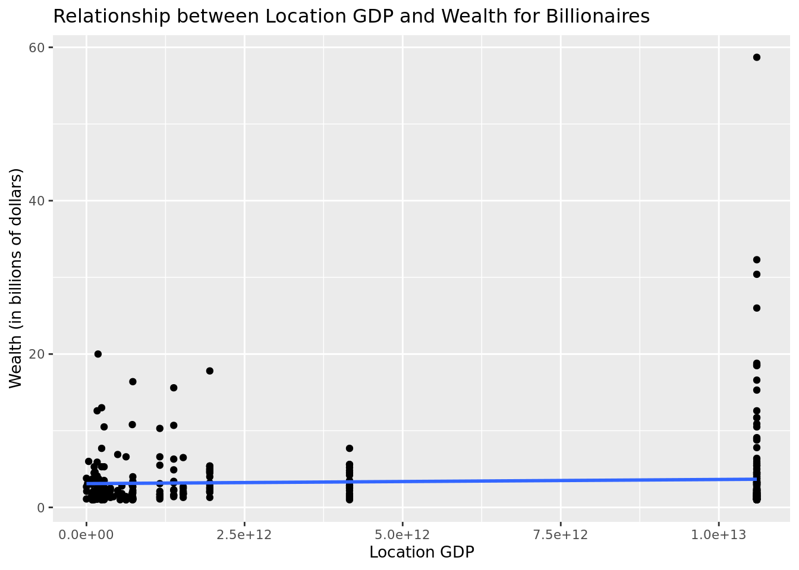
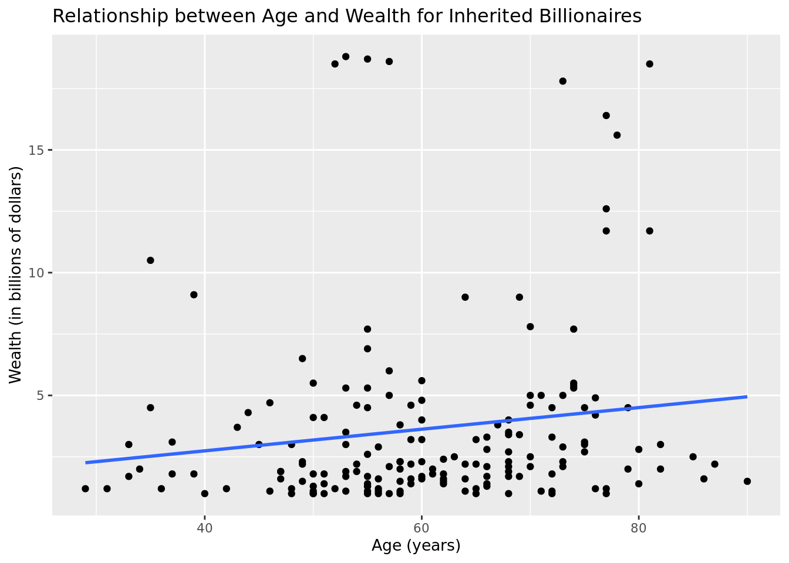

library(tidyverse)
library(tidymodels)Sevenr Project
Report
Introduction and data
Source, topic, when, how, cases, relevant variables
Ethical concerns?
Our research question is: “do the predictors of a linear regression modeling billionaire wealth change depending on if the wealth was inherited or not inherited?” That is, do the factors that are associated with higher levels of billionaire wealth change given that the billionaire had inherited money to begin with or not?
Our hypothesis is that ?
Methodology
Multivariate linear regression.
Dataset cleaning (lots of 0s for some reason)
Model building
Other tools
Results
Two (or more) linear regression models
billion <- read.csv("data/billionaires.csv")
glimpse(billion)Rows: 2,614
Columns: 22
$ name <chr> "Bill Gates", "Bill Gates", "Bill Gates", "Wa…
$ rank <int> 1, 1, 1, 2, 2, 2, 3, 3, 3, 4, 4, 4, 5, 5, 5, …
$ year <int> 1996, 2001, 2014, 1996, 2001, 2014, 1996, 200…
$ company.founded <int> 1975, 1975, 1975, 1962, 1962, 1990, 1896, 197…
$ company.name <chr> "Microsoft", "Microsoft", "Microsoft", "Berks…
$ company.relationship <chr> "founder", "founder", "founder", "founder", "…
$ company.sector <chr> " Software", " Software", " Software", " Fina…
$ company.type <chr> "new", "new", "new", "new", "new", "privatiza…
$ demographics.age <int> 40, 45, 58, 65, 70, 74, 0, 48, 77, 68, 56, 83…
$ demographics.gender <chr> "male", "male", "male", "male", "male", "male…
$ location.citizenship <chr> "United States", "United States", "United Sta…
$ location.country.code <chr> "USA", "USA", "USA", "USA", "USA", "MEX", "CH…
$ location.gdp <dbl> 8.10e+12, 1.06e+13, 0.00e+00, 8.10e+12, 1.06e…
$ location.region <chr> "North America", "North America", "North Amer…
$ wealth.type <chr> "founder non-finance", "founder non-finance",…
$ wealth.worth.in.billions <dbl> 18.5, 58.7, 76.0, 15.0, 32.3, 72.0, 13.1, 30.…
$ wealth.how.category <chr> "New Sectors", "New Sectors", "New Sectors", …
$ wealth.how.from.emerging <chr> "True", "True", "True", "True", "True", "True…
$ wealth.how.industry <chr> "Technology-Computer", "Technology-Computer",…
$ wealth.how.inherited <chr> "not inherited", "not inherited", "not inheri…
$ wealth.how.was.founder <chr> "True", "True", "True", "True", "True", "True…
$ wealth.how.was.political <chr> "True", "True", "True", "True", "True", "True…variable_filter <- billion |>
filter(year == 2001) |>
select(wealth.worth.in.billions, location.gdp, company.sector, demographics.age, wealth.how.inherited)
inheritance_grouping <- variable_filter |>
mutate(inherited = if_else(str_detect(wealth.how.inherited, "not inherited"), "not inherited", "inherited"))
yes_inherited <- inheritance_grouping |>
filter(inherited == "inherited")
not_inherited <- inheritance_grouping |>
filter(inherited == "not inherited")linear_reg() |>
set_engine("lm") |>
fit(wealth.worth.in.billions ~ location.gdp, data = variable_filter) |>
tidy()# A tibble: 2 × 5
term estimate std.error statistic p.value
<chr> <dbl> <dbl> <dbl> <dbl>
1 (Intercept) 2.98e+ 0 2.99e- 1 9.95 1.63e-21
2 location.gdp 4.01e-14 3.95e-14 1.02 3.10e- 1variable_filter |>
ggplot(aes(x = location.gdp, y = wealth.worth.in.billions)) +
geom_point() +
geom_smooth(method = "lm", se = F) `geom_smooth()` using formula = 'y ~ x'
linear_reg() |>
set_engine("lm") |>
fit(wealth.worth.in.billions ~ location.gdp, data = yes_inherited) |>
tidy()# A tibble: 2 × 5
term estimate std.error statistic p.value
<chr> <dbl> <dbl> <dbl> <dbl>
1 (Intercept) 3.05e+ 0 3.46e- 1 8.81 3.76e-16
2 location.gdp 6.93e-14 4.96e-14 1.40 1.64e- 1yes_inherited |>
ggplot(aes(x = location.gdp, y = wealth.worth.in.billions)) +
geom_point() +
geom_smooth(method = "lm", se = F) `geom_smooth()` using formula = 'y ~ x'
linear_reg() |>
set_engine("lm") |>
fit(wealth.worth.in.billions ~ location.gdp, data = not_inherited) |>
tidy()# A tibble: 2 × 5
term estimate std.error statistic p.value
<chr> <dbl> <dbl> <dbl> <dbl>
1 (Intercept) 2.90e+ 0 4.65e- 1 6.24 0.00000000145
2 location.gdp 2.82e-14 5.82e-14 0.485 0.628 not_inherited |>
ggplot(aes(x = location.gdp, y = wealth.worth.in.billions)) +
geom_point() +
geom_smooth(method = "lm", se = F) `geom_smooth()` using formula = 'y ~ x'
linear_reg() |>
set_engine("lm") |>
fit(wealth.worth.in.billions ~ company.sector, data = variable_filter) |>
tidy()# A tibble: 216 × 5
term estimate std.error statistic p.value
<chr> <dbl> <dbl> <dbl> <dbl>
1 (Intercept) 1.25 2.64 0.473 0.636
2 company.sector Oil refining 1.95 4.58 0.426 0.670
3 company.sector casinos -0.250 4.58 -0.0546 0.956
4 company.sector Communications 9.55 4.58 2.09 0.0377
5 company.sector fashion 4.05 4.58 0.885 0.377
6 company.sector finance 3.25 4.58 0.710 0.478
7 company.sector Finance 8.08 3.24 2.50 0.0131
8 company.sector Oil refining 1.95 4.58 0.426 0.670
9 company.sector retail 9.20 3.74 2.46 0.0143
10 company.sector software 24.7 4.58 5.41 0.000000124
# … with 206 more rowsvariable_filter |>
ggplot(aes(x = company.sector, y = wealth.worth.in.billions)) +
geom_point() +
geom_smooth(method = "lm", se = F) `geom_smooth()` using formula = 'y ~ x'
linear_reg() |>
set_engine("lm") |>
fit(wealth.worth.in.billions ~ company.sector, data = yes_inherited) |>
tidy()# A tibble: 96 × 5
term estimate std.error statistic p.value
<chr> <dbl> <dbl> <dbl> <dbl>
1 (Intercept) 1.40 3.50 0.400 0.689
2 company.sector Oil refining 1.80 4.94 0.364 0.716
3 company.sector fashion 3.90 4.94 0.789 0.432
4 company.sector Finance 0.900 4.94 0.182 0.856
5 company.sector Oil refining 1.80 4.94 0.364 0.716
6 company.sector retail 9.05 4.28 2.11 0.0365
7 company.sectoradvertising -0.400 4.94 -0.0809 0.936
8 company.sectoraerospace and defense 1.70 4.94 0.344 0.732
9 company.sectorauto dealerships 1.60 4.94 0.324 0.747
10 company.sectorauto engines 0.900 4.94 0.182 0.856
# … with 86 more rowsyes_inherited |>
ggplot(aes(x = company.sector, y = wealth.worth.in.billions)) +
geom_point() +
geom_smooth(method = "lm", se = F) `geom_smooth()` using formula = 'y ~ x'
linear_reg() |>
set_engine("lm") |>
fit(wealth.worth.in.billions ~ company.sector, data = not_inherited) |>
tidy()# A tibble: 155 × 5
term estimate std.error statistic p.value
<chr> <dbl> <dbl> <dbl> <dbl>
1 (Intercept) 1.10 3.89 0.283 7.78e- 1
2 company.sector casinos -0.100 5.50 -0.0182 9.86e- 1
3 company.sector Communications 9.70 5.50 1.76 7.97e- 2
4 company.sector finance 3.40 5.50 0.618 5.37e- 1
5 company.sector Finance 10.6 4.49 2.35 1.98e- 2
6 company.sector software 24.9 5.50 4.53 1.16e- 5
7 company.sector Software 57.6 5.50 10.5 7.12e-20
8 company.sector technology 0.900 5.50 0.164 8.70e- 1
9 company.sectoradvertising 0.500 4.35 0.115 9.09e- 1
10 company.sectoragricultural products 2.50 5.50 0.455 6.50e- 1
# … with 145 more rowsnot_inherited |>
ggplot(aes(x = company.sector, y = wealth.worth.in.billions)) +
geom_point() +
geom_smooth(method = "lm", se = F) `geom_smooth()` using formula = 'y ~ x'
linear_reg() |>
set_engine("lm") |>
fit(wealth.worth.in.billions ~ demographics.age, data = variable_filter) |>
tidy()# A tibble: 2 × 5
term estimate std.error statistic p.value
<chr> <dbl> <dbl> <dbl> <dbl>
1 (Intercept) 2.57 0.375 6.86 1.91e-11
2 demographics.age 0.0134 0.00679 1.97 4.89e- 2 variable_filter |>
ggplot(aes(x = demographics.age, y = wealth.worth.in.billions)) +
geom_point() +
geom_smooth(method = "lm", se = F) `geom_smooth()` using formula = 'y ~ x'
linear_reg() |>
set_engine("lm") |>
fit(wealth.worth.in.billions ~ demographics.age, data = yes_inherited) |>
tidy()# A tibble: 2 × 5
term estimate std.error statistic p.value
<chr> <dbl> <dbl> <dbl> <dbl>
1 (Intercept) 2.36 0.473 4.99 0.00000124
2 demographics.age 0.0221 0.00864 2.55 0.0113 yes_inherited |>
ggplot(aes(x = demographics.age, y = wealth.worth.in.billions)) +
geom_point() +
geom_smooth(method = "lm", se = F) `geom_smooth()` using formula = 'y ~ x'
linear_reg() |>
set_engine("lm") |>
fit(wealth.worth.in.billions ~ demographics.age, data = not_inherited) |>
tidy()# A tibble: 2 × 5
term estimate std.error statistic p.value
<chr> <dbl> <dbl> <dbl> <dbl>
1 (Intercept) 2.70 0.544 4.97 0.00000112
2 demographics.age 0.00793 0.00976 0.812 0.417 not_inherited |>
ggplot(aes(x = demographics.age, y = wealth.worth.in.billions)) +
geom_point() +
geom_smooth(method = "lm", se = F) `geom_smooth()` using formula = 'y ~ x'